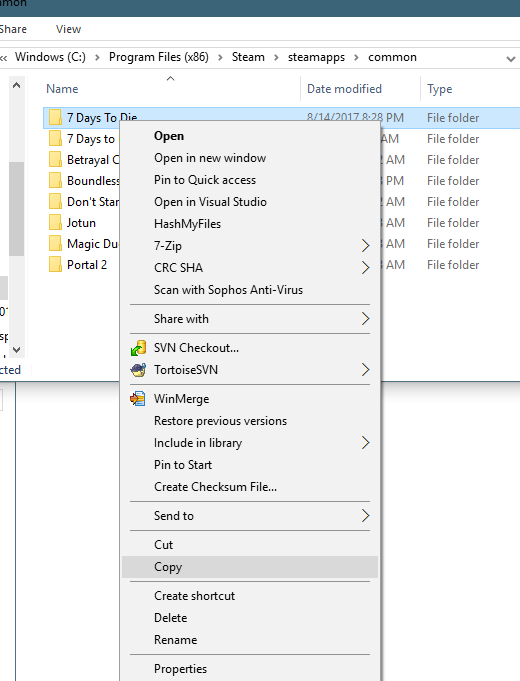
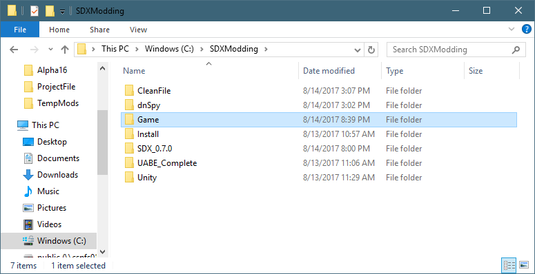
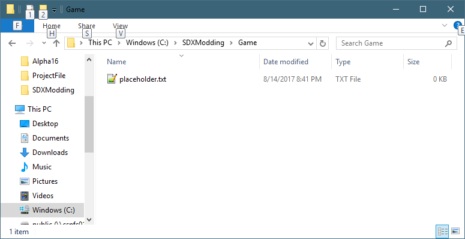
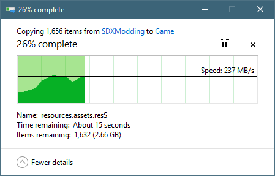
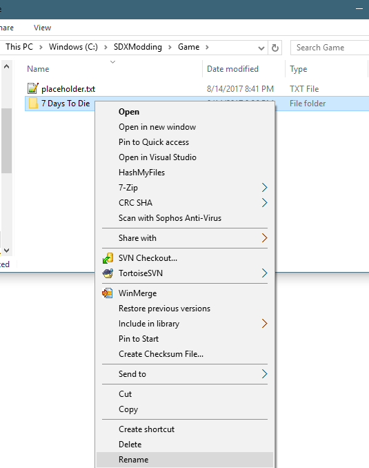
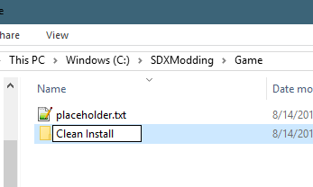

One you have completed the "Starting off Clean" section, it's time to make two copies.
Why two copies? One copy will be used as a plain vanilla version. Since Steam will auto-update if a new release is pushed out, you may not be ready to jump to that new version just yet, especially if you are learning how to mod. The other copy will be your working copy, where you'll be applying mods.
Using Windows explorer, navigate to your Steam Folder, which is by default "C:\Program Files (x86)\Steam\steamapps\common"

Right Click on the "7 Days To Die" folder, and select Copy

Open up an Explorer Window where you have installed the SDXModding, such as C:\SDXModding\Game\

Double Click to open the "Game" Folder.

Right click on the folder, and select "Paste". It will then make a copy of the game:

Once it's finished, we'll rename the folder to "Clean Install". Right click on "7 Days To Die" in the "C:\SDXModding\Game\" folder, and select "Rename"

Rename the folder "Clean Install"

You now have a perfectly preserved copy of the game.
Created with the Personal Edition of HelpNDoc: Easily create Web Help sites